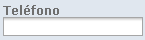
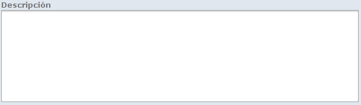
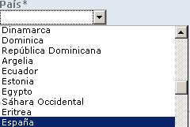
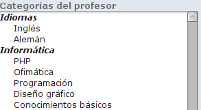
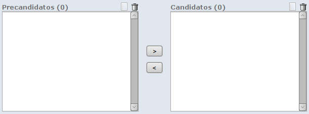
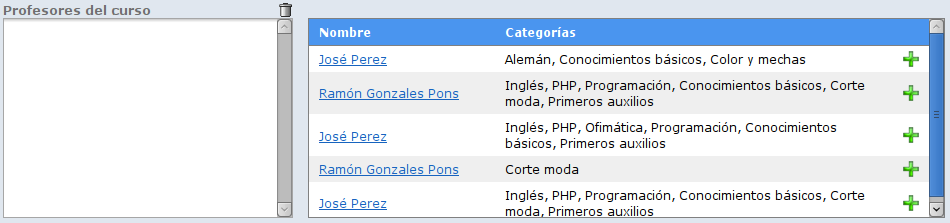
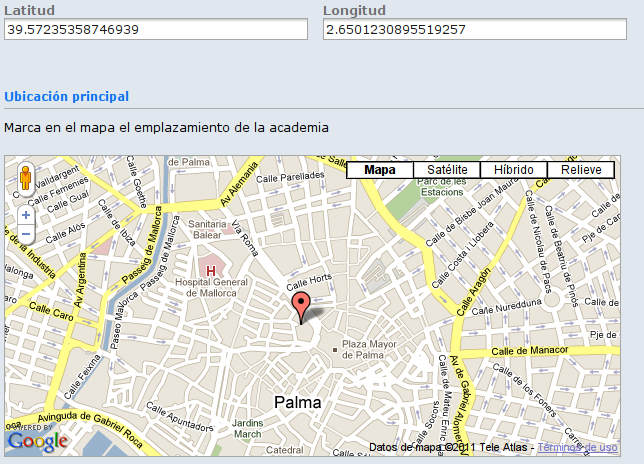
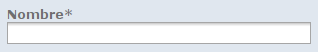
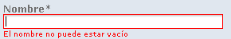 Campo de texto no relleno
Los campos cuyo nombre tengan un asterisco son obligatorios. En caso de no rellenarse mostrarán un mensaje informando de ello. Los campos obligatorios pueden ser campos de texto, selectores, áreas de texto o multiselectores.
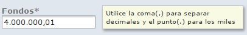 Campo con ayuda
Algunos campos mostrarán un mensaje de ayuda cuando el cursor se encuentre dentro de ellos. Para que desaparezca bastará con clicar fuera del mismo. Normalmente la información es referente al formato que debe tener el texto que se introduzca, aunque puede haber otro tipo de mensajes. Los irá descubriendo a medida que introduzca la información.
Muestra los elementos de 20 en 20. Cuando hay más de 20 elementos aparece una barra de navegación en la parte inferior del listado mediante la cual podrá recorrer el listado completo. La parte superior del listado(la barra azul), muestra los nombres de los campos, si lo desea puede ordenar el listado por uno de estos campos clicando sobre él.
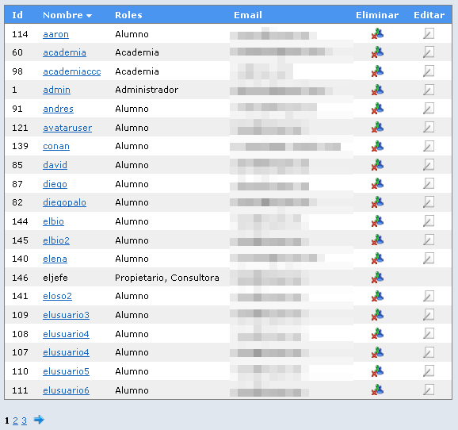 Listado ordenado por nombre
La mayoría de elementos de la aplicación disponen de un buscador. Se puede acceder a él a través de la opción del buscador que aparece en el menú desplegable o bien desde el botón de buscar en la barra de herramientas, cuando esté activo.
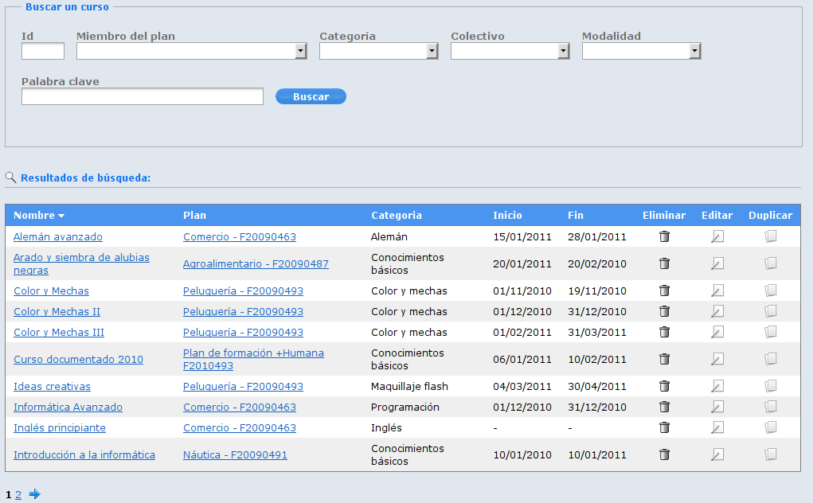 Formulario de búsqueda y resultados
El resultado de la búsqueda aparecerá en la parte inferior del formulario de búsqueda con el formato de un listado. Al igual que este, podrá navegar por los resultados en caso de que superen las 20 coincidencias, eliminar un elemento, editarlo o bien duplicarlo si dicha acción está permitida.